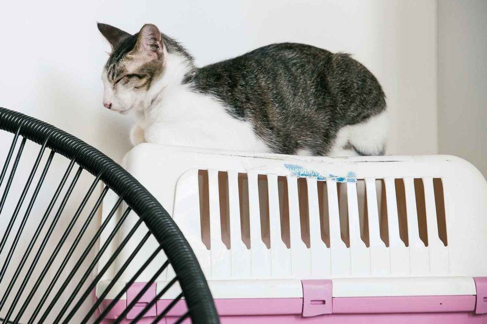

Đào tạo người vận chuyển
Mèo thấy việc đi lại rất căng thẳng. Bạn nên huấn luyện mèo bằng người vận chuyển để bất kỳ chuyến đi nào bạn thực hiện không quá mệt mỏi. Để huấn luyện mèo, bạn nên để trong nhà luôn có người vận chuyển để mèo không sợ hãi khi nhìn thấy. Tiếp theo, bạn nên thưởng cho mèo những món ăn vặt trong và xung quanh lồng, để chúng tự do ra vào lồng. Chẳng bao lâu nữa, bạn sẽ có thể cho chúng vào hộp trong một khoảng thời gian ngắn ở nhà và tăng dần thời gian, chẳng hạn như 5 phút, 10 phút, 15 phút. Thưởng thức món ăn và khen ngợi mèo khi chúng ở trong lồng. Khi chúng giữ bình tĩnh và luôn thoải mái trong lồng, bạn có thể đưa chúng ra ngoài đi dạo một đoạn ngắn lên xuống phố, lại tăng dần thời gian và khoảng cách. Sau đó, bạn có thể giới thiệu những chuyến đi ô tô ngắn. Mục đích là để con mèo luôn giữ bình tĩnh. Nếu họ bắt đầu có dấu hiệu căng thẳng thì nên dừng quá trình này. Hãy thử lót một chiếc khăn vào lồng để mèo cảm thấy thoải mái và để chúng có mùi hương quen thuộc như ở nhà khi đi du lịch.Chuẩn bị bay
Ngoài việc huấn luyện mèo của bạn bằng tàu sân bay, bạn có thể làm một số việc khác để chuẩn bị cho chúng bay, bao gồm phát tiếng máy bay trên TV và sử dụng thuốc xịt pheromone hoặc dung dịch làm dịu bằng thảo dược. Vào ngày bay, bạn nên chuẩn bị:- Dây nịt và dây xích – trong trường hợp bạn cần đưa chúng ra khỏi lồng
- Miếng đệm tập luyện – để giải quyết mọi mớ hỗn độn
- Thức ăn và nước uống – thức ăn phải được dán vào hộp đựng
- Khăn lau em bé
- Hồ sơ y tế/chi tiết vi mạch
BÌNH LUẬN cho Paws for Compassion để giành được một phần trong khoản trợ cấp 500.000 USD. Tất cả bạn phải làm là bỏ phiếu!
Mỗi đô la đều được tính là một phiếu bầu để bạn có thể quyên góp và bỏ phiếu!